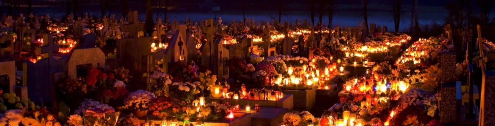
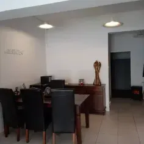
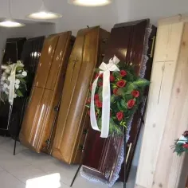

O nas
Empatia i wieloletnie doświadczenie w branży funeralnej — dla godnego pożegnania bliskich.
Doświadczenie poparte wyczuciem i empatią
Zakład pogrzebowy Anioł w Gdyni od wielu lat służy pomocą w organizacji pogrzebów na terenie Trójmiasta. Dzięki wieloletniej działalności w branży funeralnej zdobyliśmy odpowiednie doświadczenie, aby podejść do kwestii pochówku zmarłego w profesjonalny sposób, charakteryzujący się wyczuciem i empatią.
Żałoba po śmierci najbliższej osoby to czas ogromnego smutku i zagubienia. W tych ciężkich chwilach wiele osób nie jest w stanie skupić się na dopilnowaniu wszystkich niezbędnych szczegółów związanych z organizacją pochówku. Doskonale to rozumiemy, dlatego wychodzimy naprzeciw Państwa potrzebom i oferujemy zajęcie się tymi obowiązkami za Państwa.

Kompleksowo — od przewozu po ceremonię
Nasz zakład oferuje kompleksowe usługi pogrzebowe. Pomożemy Państwu we wszystkich czynnościach, które są niezbędne, aby zorganizować godny pochówek: od momentu przewozu osoby zmarłej do chłodni, przez załatwienie niezbędnych formalności urzędowych, aż po zorganizowanie ceremonii pogrzebowej. Wszystkie szczegóły możemy omówić zarówno w Państwa domu, jak i siedzibie naszej firmy.
Oferujemy nie tylko szeroki zakres usług związanych z organizacją ceremonii pogrzebowej, ale także doświadczenie, powagę i dyskrecję. Każde zlecenie staramy się zrealizować perfekcyjnie według Państwa oczekiwań. Cała oprawa ceremonii, czyli baldachim, sztuczna trawa, winda oraz oprawa muzyczna, jest całkowicie bezpłatna. Proponujemy również szeroki wybór wieńców, wiązanek, floretów na trumny i urny. Zapewniamy darmowy dowóz dekoracji.
Nasz zakład pogrzebowy zapewnia również pomoc w organizacji stypy. Wynajmiemy odpowiedni lokal, a jeśli wolą Państwo zorganizować uroczystość w domu, zapewnimy catering.
Kiedy nastąpi śmierć bliskiej osoby, bardzo ważne jest, aby jak najszybciej skontaktować się z profesjonalną firmą, która zajmie się wszystkimi formalnościami i czynnościami związanymi z organizacją pogrzebu. Biorąc pod uwagę, że nasza pomoc może być Państwu potrzebna w najmniej oczekiwanym momencie, działamy 24 godziny na dobę, 7 dni w tygodniu.

Fachowcy, którzy rozumieją
W tym trudnym okresie rodzina nie powinna skupiać się na organizacji pogrzebu, ale przede wszystkim na znalezieniu sposobów na jak najgodniejsze pożegnanie się z bliską osobą. Decydując się na zlecenie przygotowań do pogrzebu naszemu zakładowi, mogą Państwo w spokoju przeżywać żałobę.
Korzystając z usług naszego zakładu pogrzebowego, mogą być Państwo pewni, że nawiązują współpracę z fachowcami. W naszym zespole pracują ludzie, którzy od wielu lat mają styczność z branżą funeralną. Dzięki temu potrafią wczuć się w emocje osoby pogrążonej w żałobie i zachować niezbędną powagę podczas wykonywania wszelkich czynności.
Zapraszamy do kontaktu w celu ustalenia szczegółów ceremonii. Czekamy na Państwa telefon przez całą dobę, 7 dni w tygodniu. Zrobimy wszystko, co w naszej mocy, aby pomóc Państwu godnie pożegnać bliską osobę.
Skontaktuj się z namiCzekamy na Państwa telefon — całą dobę
Zrobimy wszystko, co w naszej mocy, aby pomóc Państwu godnie pożegnać bliską osobę.